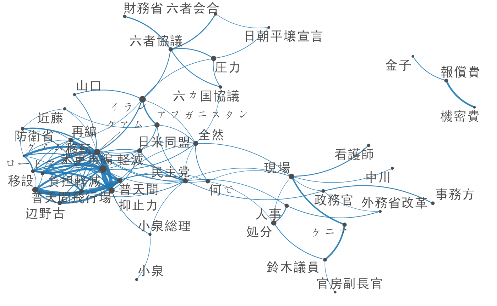
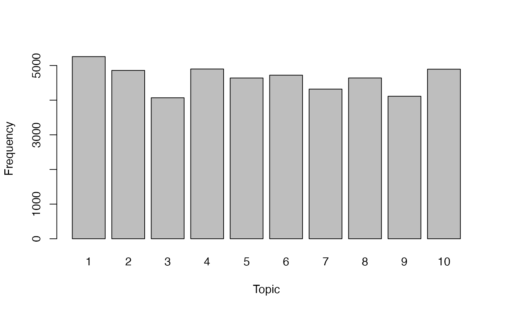

japanese_speech_ja.Rmd本例で用いる衆議院外務委員会の議事録は，1947年から2017年の間のすべての発言を含んでいる．このコーパスはquanteda.corporaを用いてダウンロードできる．
devtools::install_github("quanteda/quanteda.corpora")
full_corp <- quanteda.corpora::download("data_corpus_foreignaffairscommittee")読者が独自のコーパスを作成できるように，本例のコーパスを作成した手順を以下に示してある．
国会会議録のダウンロードにはkaigirokuパッケージを使う．APIが応答しない場合に途中からダウンロードをやり直す必要がないように，年ごとにファイルに保存し，それらを最後に連結すると良い．
devtools::install_github("amatsuo/kaigiroku")
library(kaigiroku)
# 年ごとに議事録をダウンロード
folder_download <- "~/temp/download"
committee <- "外務"
for (year in 1947:2017) {
cat(as.character(Sys.time()), year, committee, "\n")
temp <- get_meeting(meetingName = committee, year = year)
if (is.null(temp)) next
saveRDS(temp, file = sprintf("%s/%s_%s.rds", folder_download, year, committee))
Sys.sleep(10)
}
# ファイルを結合して保存
file_all <- list.files(folder_download, full = TRUE, pattern = ".rds")
speech <- lapply(as.list(file_all), readRDS) %>% bind_rows()
saveRDS(speech, file = paste0(folder_download, "committee_speeches.rds"))発言者のいないレコード（典型的には各議事録の0番目の出席者，議題等の部分）を取り除く，また，各発言の冒頭は発言者の氏名と役職名なので，その部分から役職名を取り出して新しいdocvarを作る．
full_corp <- corpus_subset(full_corp, speaker != "")
## capacity変数の作成
capacity <- full_corp %>%
str_sub(1, 20) %>%
str_replace_all("\\s+.+|\n", "") %>% # 冒頭の名前部分の取り出し
str_replace( "^.+?(参事|政府特別補佐人|内閣官房|会計検査院|最高裁判所長官代理者|主査|議員|副?大臣|副?議長|委員|参考人|分科員|公述人|君(（.+）)?$)", "\\1") %>% # 冒頭の○から，名前部分までを消去
str_replace("（.+）", "")## Warning in stri_sub(string, from = start, to = end): argument is not an
## atomic vector; coercingcapacity <- str_replace(capacity, "^○.+", "Other") # マイナーな役職名は一括して"Other"に
knitr::kable(as.data.frame(table(capacity)))| capacity | Freq |
|---|---|
| Other | 17174 |
| 会計検査院当局者 | 47 |
| 会計検査院説明員 | 5 |
| 会計検査院長 | 7 |
| 公述人 | 70 |
| 内閣官房副長官 | 260 |
| 副大臣 | 3020 |
| 参事 | 8 |
| 参考人 | 11600 |
| 参考人（通訳つき | 8 |
| 参考人（通訳なし | 2 |
| 君 | 233 |
| 大臣 | 52850 |
| 大臣政務官 | 1135 |
| 委員 | 172692 |
| 委員外務大臣 | 1 |
| 委員大臣 | 2 |
| 委員長 | 24685 |
| 委員長代理 | 1361 |
| 政府特別補佐人 | 80 |
| 議員 | 27 |
docvars(full_corp, "year") <- docvars(full_corp, "date") %>% year() %>% as.numeric()
corp <- corpus_subset(full_corp, 1991 <= year & year <= 2010)
ndoc(corp)## [1] 62670日本語の分析では，形態素解析ツールを用いて分かち書きを行うことが多いが，quantedaのtokens()は，ICUで定義された規則に従って文を語に分割することができる．さらに，漢字やカタカナの連続的共起をtextstat_collocations()を用いて抽出し，tokens_compound()によって統計的に優位な組み合わせを結合すると，より質の高いトークン化を実現できる．textstat_collocations()を用いる場合は，事前にtokens_select()と正規表現で，対象とする語だけを選択する．この際，padding = TRUEとし，語の間の距離が維持されるように注意する
toks <- tokens(corp)
toks <- tokens_select(toks, "^[０-９ぁ-んァ-ヶー一-龠]+$", valuetype = "regex", padding = TRUE)
toks <- tokens_remove(toks, c("御", "君"), padding = TRUE)
min_count <- 10
# 漢字
kanji_col <- tokens_select(toks, "^[一-龠]+$", valuetype = "regex", padding = TRUE) %>%
textstat_collocations(min_count = min_count)
toks <- tokens_compound(toks, kanji_col[kanji_col$z > 3,], concatenator = "")
# カタカナ
kana_col <- tokens_select(toks, "^[ァ-ヶー]+$", valuetype = "regex", padding = TRUE) %>%
textstat_collocations(min_count = min_count)
toks <- tokens_compound(toks, kana_col[kana_col$z > 3,], concatenator = "")
# 漢字，カタカナおよび数字
any_col <- tokens_select(toks, "^[０-９ァ-ヶー一-龠]+$", valuetype = "regex", padding = TRUE) %>%
textstat_collocations(min_count = min_count)
toks <- tokens_compound(toks, any_col[any_col$z > 3,], concatenator = "")dfm()によって文書行列を作成した後でも，dfm_*()と命名された関数を用いると分析に必要な文書の特徴を自由に選択できる．ここでは，平仮名のみもしくは一語のみから構成されたトークンをdfm_remove()によって，頻度が極端に低い語もしくは高い語をdfm_trim()によって削除している．
speech_dfm <- dfm(toks, remove = "") %>%
dfm_remove("^[ぁ-ん]+$", valuetype = "regex", min_nchar = 2) %>%
dfm_trim(min_termfreq = 0.50, termfreq_type = "quantile", max_count = 0.99)## Warning in dfm_trim.dfm(., min_termfreq = 0.5, termfreq_type =
## "quantile", : max_count is deprecated, use max_termfreqtextstat_keyness()は語の頻度を文書のグループ間で比較し，統計的に有意に頻度が高いものを選択する．ここでは，同時多発テロが発生した2001年以降に頻度が高くなった30語を示してある．
key <- textstat_keyness(speech_dfm, docvars(speech_dfm, "year") >= 2001)
head(key, 20) %>% knitr::kable()| feature | chi2 | p | n_target | n_reference |
|---|---|---|---|---|
| 武正委員 | 462.8103 | 0 | 662 | 0 |
| 東門委員 | 444.2753 | 0 | 647 | 3 |
| 笠井委員 | 428.5354 | 0 | 613 | 0 |
| アフガニスタン | 360.4881 | 0 | 582 | 18 |
| グアム | 350.8027 | 0 | 561 | 16 |
| 防衛省 | 340.4134 | 0 | 487 | 0 |
| 小泉総理 | 339.0148 | 0 | 485 | 0 |
| 近藤 | 333.5266 | 0 | 481 | 1 |
| 中曽根国務大臣 | 328.5254 | 0 | 470 | 0 |
| 町村国務大臣 | 323.6305 | 0 | 463 | 0 |
| 赤嶺委員 | 318.2711 | 0 | 500 | 12 |
| 民主党 | 298.5502 | 0 | 678 | 77 |
| 岡田国務大臣 | 298.4574 | 0 | 427 | 0 |
| 軽減 | 298.3052 | 0 | 666 | 73 |
| 首藤委員 | 290.7886 | 0 | 435 | 5 |
| 政務官 | 290.2871 | 0 | 438 | 6 |
| 小野寺委員 | 283.7739 | 0 | 406 | 0 |
| 密約 | 268.3630 | 0 | 463 | 22 |
| 麻生大臣 | 260.7009 | 0 | 373 | 0 |
| 財務省 | 219.5626 | 0 | 318 | 1 |
上の表では，委員会出席者の名前が多く含まれるので，それらを取り除くと議論の主題が明確になる．
| feature | chi2 | p | n_target | n_reference | |
|---|---|---|---|---|---|
| 4 | アフガニスタン | 360.4881 | 0 | 582 | 18 |
| 5 | グアム | 350.8027 | 0 | 561 | 16 |
| 6 | 防衛省 | 340.4134 | 0 | 487 | 0 |
| 7 | 小泉総理 | 339.0148 | 0 | 485 | 0 |
| 8 | 近藤 | 333.5266 | 0 | 481 | 1 |
| 12 | 民主党 | 298.5502 | 0 | 678 | 77 |
| 14 | 軽減 | 298.3052 | 0 | 666 | 73 |
| 16 | 政務官 | 290.2871 | 0 | 438 | 6 |
| 18 | 密約 | 268.3630 | 0 | 463 | 22 |
| 20 | 財務省 | 219.5626 | 0 | 318 | 1 |
| 23 | ロードマップ | 207.6790 | 0 | 301 | 1 |
| 27 | 米軍再編 | 199.1795 | 0 | 285 | 0 |
| 28 | 普天間 | 197.9925 | 0 | 514 | 74 |
| 29 | 山口 | 185.5079 | 0 | 439 | 54 |
| 30 | 負担軽減 | 184.2252 | 0 | 275 | 3 |
| 31 | 辺野古 | 183.5267 | 0 | 274 | 3 |
| 32 | 日米同盟 | 182.6658 | 0 | 376 | 34 |
| 33 | 金子 | 180.4182 | 0 | 262 | 1 |
| 34 | 六カ国協議 | 175.5255 | 0 | 255 | 1 |
| 37 | 六者協議 | 161.3388 | 0 | 281 | 14 |
fcm()によって作成した共起行列に対して，textplot_network()を用いると語の関係が視覚化でき，文書の内容の全体像を容易に把握できる．
feat <- head(key$feature, 50)
speech_fcm <- dfm_select(speech_dfm, feat) %>% fcm()
size <- sqrt(rowSums(speech_fcm))
textplot_network(speech_fcm, min_freq = 0.85, edge_alpha = 0.9,
vertex_size = size / max(size) * 3,
vertex_labelfont = if (Sys.info()["sysname"] == "Darwin") "SimHei" else NULL)
quantedaのdfmをconvert()で変換し，topicmodelsをパッケージを用いて潜在的な話題を推定する．
set.seed(100)
lda <- LDA(convert(speech_dfm, to = "topicmodels"), k = 10)
get_terms(lda, 10) %>% knitr::kable()| Topic 1 | Topic 2 | Topic 3 | Topic 4 | Topic 5 | Topic 6 | Topic 7 | Topic 8 | Topic 9 | Topic 10 |
|---|---|---|---|---|---|---|---|---|---|
| イラン | 部隊 | 見地 | 留保 | 相談 | 児童 | 項目 | 租税条約 | 土地 | 完全 |
| 重要性 | 普天間 | 日本国 | 彼ら | ドル | 設定 | 普天間 | 一層 | 言い方 | 社会 |
| ヨーロッパ | 女性 | 古堅委員 | センター | 宣言 | 経済的 | 改定 | 両国間 | 相談 | 人権 |
| 警察 | 期間 | 通告 | 批判 | イギリス | ケニア | 記者会見 | 計上 | 必要性 | プロセス |
| 過程 | 建設 | 有意義 | パレスチナ | 手当 | フィリピン | 旅券 | 防止 | 与える | 長い |
| 一生懸命 | ポーランド | 公表 | 能力 | 二国間 | 再開 | 公表 | 提案理由 | 案内 | 比べ |
| パキスタン | 採択 | 遺憾 | インドネシア | 管理 | コメント | 行使 | 業務 | 抗議 | 広島 |
| 極東 | 言い方 | 国際協力 | 現場 | 質疑 | 正確 | コメント | 資する | 常に | 研究 |
| 基本 | 移民 | 密約 | 雇用 | 停戦 | ミャンマー | 武力行使 | 日本国 | 過程 | 成果 |
| 香港 | 軽減 | 並びに | 場所 | に対し | 手段 | 経験 | 議題 | 見通し | 締約国 |
